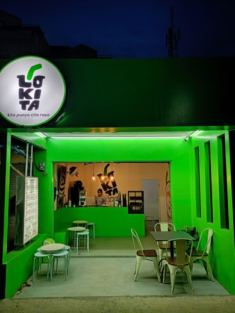

Barista
Lokita
- Menyiapkan dan menyajikan minuman sesuai pesanan pelanggan.
- Melayani pelanggan dengan ramah dan komunikatif.
- Membantu menjaga kebersihan dan kerapian area kerja.
- Bekerja sama dengan tim untuk mendukung kelancaran operasional.
